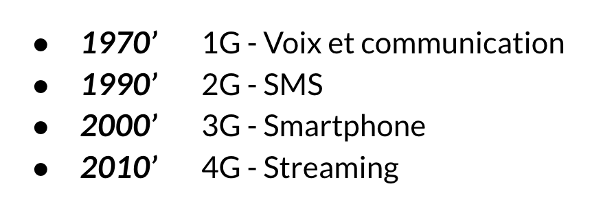
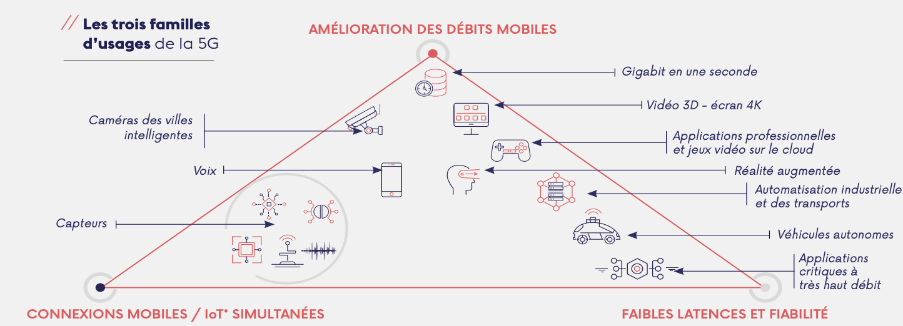
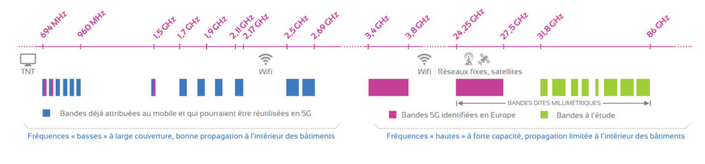

Historique des générations
La 5G, c'est d'abord la cinquième génération des standards pour la téléphonie mobile. La première génération était uniquement dédié aux appels vocaux et reposait sur une technologie analogique. La 2G est la première génération fiable et comme les suivantes, elle repose sur une technologie numérique. C'est également le début des SMS et MMS. La 3G a permis de démocratiser l'internet mobile dans le monde en augmentant les débits et la 4G a finalement permis le très haut débit. Finalement la 4G peut être vu comme une simple itération de la 3G, qui augmente ses performances, pourtant elle était déjà annoncée comme une révolution.
On peut faire le même constant pour la 5G. Au premier abord, cette nouvelle technologie peut simplement sembler simplement être une itération supplémentaire des standards: on promet des meilleurs débits et une plus faible latence. Mais selon l'ARCEP(Autorité de régulation des communications électroniques, des postes et de la distribution de la presse), la 5G est une "génération de rupture [qui] permettra un saut de performance ".
La technologie
Si la 5G est annoncé comme une génération de rupture c'est pour la rupture technologique qu'elle propose. Cette nouvelle technologie repose en effet sur trois piliers:
- une augmentation considérable des débits - jusqu'à 2OGb/s
- une diminution radicale de la latence - 1ms de délai
- un partage du réseau avec le "network slicing"
La combinaison de ces trois piliers ouvre des champs d'applications nouveaux pour la téléphonie mobile qui vont des objets connectés à la voiture autonome en passant par la médecine. L'image qui suit provient d'une circulaire de l'ARCEP et détaille les usages possibles de la 5G permis par ces trois piliers. Source
Le concept de network slicing, au coeur de la 5G est explicité dans la vidéo qui suit. Il consiste à diviser le réseau en "sous-réseaux". Chaque sous-réseau correspond à un catégorie d'usage spécifique. Pour la 5G on veut partitionner le réseau en trois: un dédié à la téléphonie mobile, un aux objets connectés, un pour les applications nécessitant d'excellentes performances comme la voiture autonome. Cette partition est essentiel pour faire face à la densité très élevée des connexions au réseau avec des exigences différentes.
Cette veille ne s'intéresse pas à la technologie en elle-même mais davantage aux impacts et enjeux liés au déploiement de la 5G. Toutefois il est intéressant de noter que la 5G utilisent les ondes millimétriques pour son déploiement. Longtemps considéré comme instables et aux effets inconnus sur la santé, ces ondes ont une portée plus courtes. Elles permettent cependant de couvrir des superficies fortement fréquentées même si plus réduites. L'image suivante présente les blocs de fréquences prévus pour le déploiement de la 5G. L'utilisation de cette bande a de fortes implications, aussi bien dans l'attribution de ces bandes que ce que leur utilisation impliquent.
C'est pour quand ?
La 5G est déjà une réalité dans certains pays. En Corée du Sud elle est déployé depuis 2019. En france, les premiers déploiements devraient arriver cette année. La synthèse des annonces du gouvernement et de la feuille de route établi par les ministres européens permettent d'aboutir à un calendrier qui s'étend jusque 2030. 2019 a déjà connu l'ouverte de sites pilotes et la définition des modalités d'attributions. La procédure d'attribution des fréquences a elle aussi été lancée.
2020
- Annonce des opérateurs candidats.
- Attributions de fréquences avec la publication des décisions.
- Premiers déploiements.
- Ouverture commerciale des premiers services 5G.
- La 5G doit être proposée dans cinq à dix villes françaises.
2022
- Chaque opérateur devra avoir déployé 3 000 sites 5G.
2023
- Disponibilité, au plus tard, de la bande 1,5 GHz pour la 5G.
- Premier point d’étape sur la mise en œuvre des obligations et sur les besoins.
- Lancement, au plus tard, des services différenciés (« slicing ») en 5G.
2024
- Chaque opérateur devra avoir déployé 8 000 sites 5G (dont 4 000 en zone peu dense).
- Les sites olympiques devraient être couverts en 5G.
2025
- Couverture des grands centres urbains et des axes de type autoroutier (16 642 km).
- L’accès à la 5G devra être possible pour deux tiers de la population.
- Chaque opérateur devra avoir déployé 10 500 sites 5G (dont 2 625 en zone peu dense).
2027
- Couverture des routes principales (54 913 km).
2028
- Second point d’étape sur la mise en œuvre des obligations et sur les besoins.
2030
- Le réseau devra être 100 % 5G d’ici à cette date.
Aussi, la 5G devrait être une réalité pour les français d'ici 2025, où elle sera accessible par deux tiers de la population, avec le network slicing et des offres commerciales adéquates pour s'y connecter. De plus pour voir les applications de la 5G véritablement se démocratiser et se développer avec le retour des utilisateurs, il faut attendre ce déploiement.